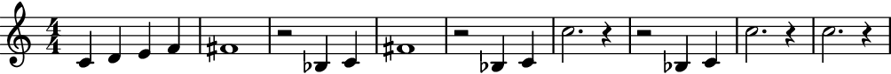

ListLooper¶
-
class
auxjad.ListLooper(contents: list, *, window_size: int, step_size: int = 1, max_steps: int = 1, repetition_chance: float = 0.0, forward_bias: float = 1.0, head_position: int = 0, process_on_first_call: bool = False)¶ This class outputs slices of a
listusing the metaphor of a looping window of a constant number of elements. This number is given by the argumentwindow_size, which is anintrepresenting how many elements are to be included in each slice.For instance, if the initial container had the elements
[A, B, C, D, E, F](where each letter represents an element of an arbitrary type) and the looping window was size3, the output would be:A B C B C D C D E D E F E F FThis can be better visualised as:
A B C B C D C D E D E F E F F- Basic usage:
Calling the object will return a
listgenerated by the looping process. Each call of the object will move the window forwards and output the result.>>> input_list = ['A', 'B', 'C', 'D', 'E', 'F'] >>> looper = auxjad.ListLooper(input_list, window_size=3) >>> looper() ['A', 'B', 'C'] >>> looper() ['B', 'C', 'D']
The property
current_windowcan be used to access the current window without moving the head forwards.>>> looper.current_window ['B', 'C', 'D']
process_on_first_call:The very first call will output the input
listwithout processing it. To disable this behaviour and have the looping window move on the very first call, initialise the class with the keyword argumentprocess_on_first_callset toTrue.>>> input_list = ['A', 'B', 'C', 'D', 'E', 'F'] >>> looper = auxjad.ListLooper(input_list, ... window_size=3, ... process_on_first_call=True, ... ) >>> looper() ['B', 'C', 'D']
- Using as iterator:
The instances of this class can also be used as an iterator, which can then be used in a for loop to exhaust all windows.
>>> input_list = ['A', 'B', 'C', 'D', 'E', 'F'] >>> looper = auxjad.ListLooper(input_list, ... window_size=3, ... ) >>> for window in looper: ... print(window) ['A', 'B', 'C'] ['B', 'C', 'D'] ['C', 'D', 'E'] ['D', 'E', 'F'] ['E', 'F'] ['F']
- Arguments and properties:
This class can take many optional keyword arguments during its creation.
step_sizedictates the size of each individual step in number of elements (default value is1).max_stepssets the maximum number of steps that the window can advance when the object is called, ranging between1and the input value (default is also1).repetition_chancesets the chance of a window result repeating itself (that is, the window not moving forwards when called). It should range from0.0to1.0(default0.0, i.e. no repetition).forward_biassets the chance of the window moving forward instead of backwards. It should range from0.0to1.0(default1.0, which means the window can only move forwards. A value of0.5gives 50% chance of moving forwards while a value of0.0will move the window only backwards). Lastly,head_positioncan be used to offset the starting position of the looping window. It must be anintand its default value is0. By default, calling the object will first return the original container and subsequent calls will process it; setprocess_on_first_calltoTrueand the looping process will be applied on the very first call.>>> input_list = ['A', 'B', 'C', 'D', 'E', 'F'] >>> looper = auxjad.ListLooper(input_list, ... window_size=3, ... step_size=1, ... max_steps=2, ... repetition_chance=0.25, ... forward_bias=0.2, ... head_position=0, ... process_on_first_call=True, ... ) >>> looper.window_size 3 >>> looper.step_size 1 >>> looper.repetition_chance 0.25 >>> looper.forward_bias 0.2 >>> looper.max_steps 2 >>> looper.head_position 0 >>> looper.process_on_first_call True
Use the properties below to change these values after initialisation.
>>> looper.window_size = 2 >>> looper.step_size = 2 >>> looper.max_steps = 3 >>> looper.repetition_chance = 0.1 >>> looper.forward_bias = 0.8 >>> looper.head_position = 2 >>> looper.process_on_first_call = False >>> looper.window_size 2 >>> looper.step_size 2 >>> looper.max_steps 3 >>> looper.repetition_chance 0.1 >>> looper.forward_bias 0.8 >>> looper.head_position 2 >>> looper.process_on_first_call False
- Setting
forward_biasto0.0: Set
forward_biasto0.0to move backwards instead of forwards (default is1.0). The initialhead_positionmust be greater than0otherwise the contents will already be exhausted in the very first call (since it will not be able to move backwards from that position).>>> input_list = ['A', 'B', 'C', 'D'] >>> looper = auxjad.ListLooper(input_list, ... window_size=2, ... head_position=2, ... forward_bias=0.0, ... ) >>> looper.output_all() ['C', 'D', 'B', 'C', 'A', 'B']
forward_biasbetween0.0and1.0:Setingt
forward_biasto a value in between0.0and1.0will result in random steps being taken forward or backward, according to the bias. The initial value ofhead_positionwill once gain play an important role here, as the contents might be exhausted if the looper attempts to move backwards after reaching the head position0.>>> input_list = ['A', 'B', 'C', 'D', 'E', 'F', 'G', 'H'] >>> looper = auxjad.ListLooper(input_list, ... window_size=2, ... head_position=4, ... forward_bias=0.5, ... ) >>> looper.output_n(4) ['E', 'F', 'D', 'E', 'C', 'D', 'B', 'C']
max_steps:Setting the keyword argument
max_stepsto a value larger than1will result in a random number of steps (between1andmax_steps) being applied at each call.>>> input_list = ['A', 'B', 'C', 'D', 'E', 'F', 'G', 'H'] >>> looper = auxjad.ListLooper(input_list, ... window_size=2, ... head_position=2, ... max_steps=4, ... ) >>> looper.output_n(4) ['C', 'D', 'D', 'E', 'E', 'F', 'H']
len():The function
len()can be used to get the total number of elements in the container.>>> input_list = ['A', 'B', 'C', 'D', 'E', 'F'] >>> looper = auxjad.ListLooper(input_list, window_size=3) >>> len(looper) 6
output_all():To run through the whole process and output it as a single
list, from the initial head position until the process outputs the single last element, use the methodoutput_all().>>> input_list = ['A', 'B', 'C', 'D'] >>> looper = auxjad.ListLooper(input_list, window_size=3) >>> looper.output_all() ['A', 'B', 'C', 'B', 'C', 'D', 'C', 'D', 'D']
output_n():To run through just part of the process and output it as a single
list, starting from the initial head position, use the methodoutput_n()and pass the number of iterations as argument.>>> input_list = ['A', 'B', 'C', 'D'] >>> looper = auxjad.ListLooper(input_list, window_size=3) >>> looper.output_n(2) ['A', 'B', 'C', 'B', 'C', 'D']
window_size:To change the size of the looping window after instantiation, use the property
window_size. In the example below, the initial window is of size3, and so the first call of the looper object outputs the first, second, and third elements of thelist. The window size is then set to4, and the looper is called again, moving to the element in the next position, thus outputting the second, third, fourth, and fifth elements.>>> input_list = ['A', 'B', 'C', 'D', 'E', 'F'] >>> looper = auxjad.ListLooper(input_list, window_size=3) >>> looper() ['A', 'B', 'C'] >>> looper.window_size = 4 >>> looper() ['B', 'C', 'D', 'E']
contents:Use the
contentsproperty to read as well as overwrite the contents of the looper. Notice that thehead_positionwill remain on its previous value and must be reset to0if that’s required.>>> input_list = ['A', 'B', 'C', 'D', 'E', 'F'] >>> looper = auxjad.ListLooper(input_list, ... window_size=3, ... ) >>> looper.contents ['A', 'B', 'C', 'D', 'E', 'F'] >>> looper() ['A', 'B', 'C'] >>> looper() ['B', 'C', 'D'] >>> looper.contents = [0, 1, 2, 3, 4] >>> looper.contents [0, 1, 2, 3, 4] >>> looper() [1, 2, 3] >>> looper.head_position = 0 >>> looper() [0, 1, 2]
- Types in the input list:
The input
listcan contain any types of elements:>>> input_list = [123, 'foo', (3, 4), 3.14] >>> looper = auxjad.ListLooper(input_list, window_size=3) >>> looper() [123, 'foo', (3, 4)]
This also include Abjad’s types. Abjad’s exclusive membership requirement is respected since each call returns a
copy.deepcopy()of the window. The same is true to theoutput_all()method.>>> import abjad >>> import copy >>> input_list = [ ... abjad.Container(r"c'4 d'4 e'4 f'4"), ... abjad.Container(r"fs'1"), ... abjad.Container(r"r2 bf4 c'4"), ... abjad.Container(r"c''2. r4"), ... ] >>> looper = auxjad.ListLooper(input_list, window_size=3) >>> staff = abjad.Staff() >>> for element in looper.output_all(): ... staff.append(element) >>> abjad.f(staff) \new Staff { { c'4 d'4 e'4 f'4 } { fs'1 } { r2 bf4 c'4 } { fs'1 } { r2 bf4 c'4 } { c''2. r4 } { r2 bf4 c'4 } { c''2. r4 } { c''2. r4 } }

Methods
__call__()Calls the looping process for one iteration, returning an
abjad.Selection.__init__(contents, *, window_size[, …])Initialises self.
__iter__()Returns an iterator, allowing instances to be used as iterators.
__len__()Returns a length of
contents.__next__()Calls the looping process for one iteration, returning an
abjad.Selection.__repr__()Returns interpreter representation of
contents.Goes through the whole looping process and outputs a single
list.output_n(n)Goes through
niterations of the looping process and outputs a singlelist.Attributes
The
listto be sliced and looped.Read-only property, returns the window at the current head position.
The chance of the window moving forward instead of backwards.
The position of the head at the start of a looping window.
The maximum number of steps per operation.
If
Truethencontentswill be processed in the very first call.The chance of the head not moving, thus repeating the output.
The size of each step when moving the head.
The length of the looping window.
-
__call__() → abjad.core.Selection.Selection¶ Calls the looping process for one iteration, returning an
abjad.Selection.
-
__init__(contents: list, *, window_size: int, step_size: int = 1, max_steps: int = 1, repetition_chance: float = 0.0, forward_bias: float = 1.0, head_position: int = 0, process_on_first_call: bool = False) → None¶ Initialises self.
-
__next__() → abjad.core.Selection.Selection¶ Calls the looping process for one iteration, returning an
abjad.Selection.
-
property
current_window¶ Read-only property, returns the window at the current head position.
-
property
forward_bias¶ The chance of the window moving forward instead of backwards. It should range from
0.0to1.0(default1.0, which means the window can only move forwards. A value of0.5gives \(50\%\) chance of moving forwards while a value of0.0will move the window only backwards).
-
property
head_position¶ The position of the head at the start of a looping window.
-
property
max_steps¶ The maximum number of steps per operation.
-
output_all() → list¶ Goes through the whole looping process and outputs a single
list. This method replaces the parent’s one since the parent’s method outputs anabjad.Selection.
-
output_n(n: int) → list¶ Goes through
niterations of the looping process and outputs a singlelist. This method replaces the parent’s one since the parent’s method outputs anabjad.Selection.
-
property
repetition_chance¶ The chance of the head not moving, thus repeating the output.
-
property
step_size¶ The size of each step when moving the head.
-
property
window_size¶ The length of the looping window.